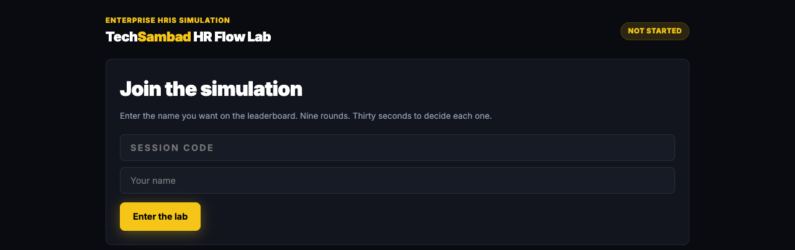

Enterprise HRIS simulation · Live classroom
HR Flow Lab
Nine rounds. Thirty seconds to decide each one. A live leaderboard. The point is not the score — it is that the HR process becomes visible while you are inside it.

1. What it is
A browser-based simulation for teaching HR processes. Students join a live session, are presented with a sequence of decisions drawn from the operating life of an HR function, and choose under time pressure. The leaderboard turns the aggregate of those choices into something the room can look at together.
It runs in a browser with nothing to install, on whatever device the student already has.
2. How a session runs
| Facilitator | Opens a session. Until it starts, students see a Not Started badge. |
| Students | Enter the session code and the name they want on the leaderboard. |
| Play | Nine rounds. Roughly thirty seconds to decide each one. |
| Leaderboard | Ranks the room as the session progresses. |
3. Why the clock matters
Thirty seconds is not enough time to calculate. It is enough time to recognise, or to guess. That constraint does the teaching: in a real HR function most process failures are not analytical failures. They are a person at a desk taking the shortest available route because nobody told them where the hand-off went.
Played live, the room converges on the same wrong answers for the same reasons — which gives the debrief something concrete to work on.
4. Using it in class
- Open with it, not with slides. Students who have just made the mistake will listen to the explanation of it.
- Run the leaderboard as a diagnostic, not as a competition. A cluster of identical wrong answers tells you what the class does not yet know.
- Debrief on the decisions, not the score. For each round: what did the fastest route cost, and who absorbed that cost downstream?
- Repeat it after teaching. The second run is where the learning shows, because the same decisions now look different.